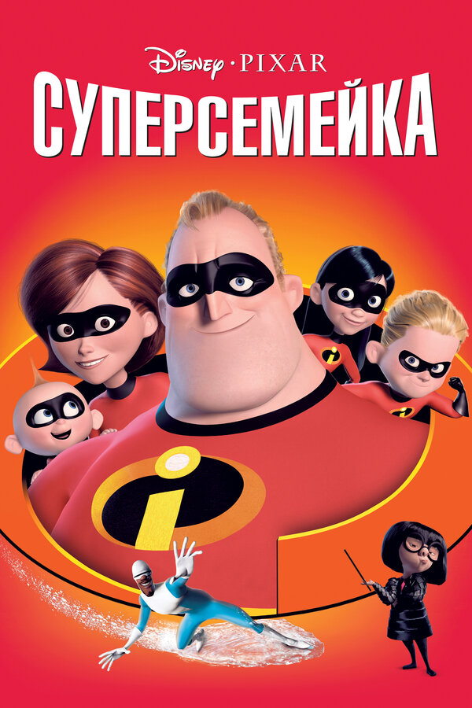
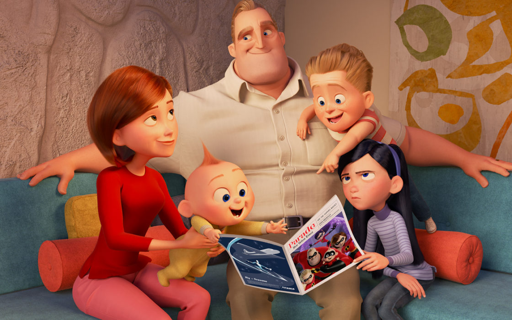

Суперсемейка (2004)
«Суперсеме́йка» — полнометражный компьютерный анимационный фильм режиссёра и сценариста Брэда Бёрда, вышедший на экраны в 2004 году. Мультфильм, рассказывающий о жизни семьи супергероев, был произведён студией Pixar и выпущен в прокат компанией Walt Disney Pictures.
История семьи супергероев, члены которой уже отошли от больших дел и предпочитают жить непримечательной жизнью обычных землян. Они обладают сверхъестественными способностями и относительно легко справлялись с мировым злом.
Но в один прекрасный день папаше и его домочадцам приходится вновь облачиться в прорезиненные костюмы супергероев (а для этого нужно срочно сбросить лишние килограммы) и в очередной раз спасти человечество от таинственного злодея.
Быть супергероем не так и просто, особенно, если спасенные тобой мирные жители постоянно преследуют тебя судебными исками. Мистер Исключительный устал от всего этого, женился, обзавелся детьми и спрятал свой костюм супергероя куда подальше. Прошли годы, но ностальгия по приключениям никуда не делась. Однажды Исключительному досталась интересная работа, которая явно позволит вспомнить былое и применить свои таланты.
СМОТРЕТЬ ТРЕЙЛЕР СМОТРЕТЬ МУЛЬТФИЛЬМ